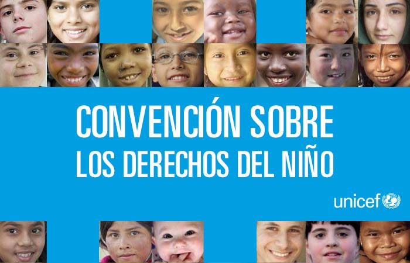
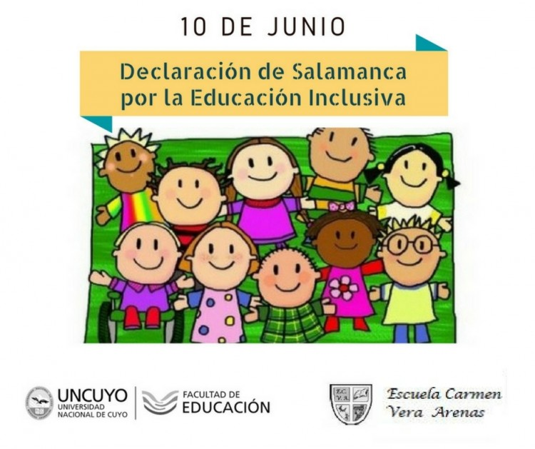
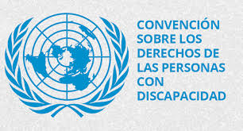
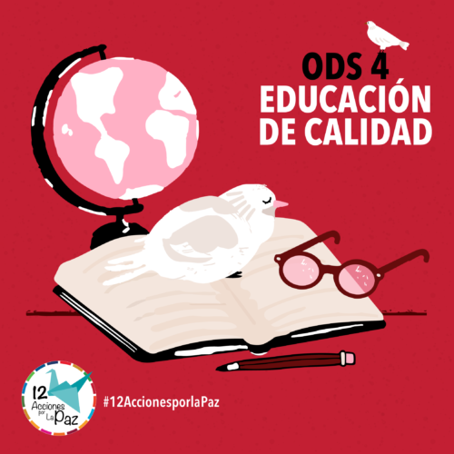

Marco legal internacional en materia de Educación Inclusiva
El marco legal internacional en materia de Educación Inclusiva está constituido por todas aquellas herramientas legales internacionales que busca garantizar a la Primera Infancia, Niñez y Adolescencia el acceso a la educación sin discriminación.
Las principales herramientas legales internacionales en materia de educación inclusiva son:
Declaración Universal de Derechos Humanos (1948):
Esta declaración es el instrumento que universaliza los derechos humanos y visibiliza la necesidad de crear condiciones de igualdad, ya que esta nace después de las barbaries de la segunda guerra mundial, ya que, como toda guerra, dejo secuelas permanentes no solo en las familias de los fallecidos, sino también en las personas que a raíz de esta adquirieron algún tipo de discapacidad
Según el libro “Derechos Humanos: Historia y conceptos básicos”, “Ese histórico documento, inspirado en las declaraciones de derechos del siglo XVIII, reconoce que todos los seres humanos somos iguales en derechos, que los derechos son inherentes a nuestra condición humana y que nos pertenecen a todos y todas, sin limitaciones de fronteras” (Fundación Juan Vives Suriá, 2010, p. 17)en dicha declaración no se habla en específico de la educación inclusiva, sin embargo, se establece que toda persona tiene igualdad de derechos y de la misma forma, para el goce del derecho a la educación no debe aplicar ningún tipo de discriminación. Art. 1, Art.2 y Art. 26

Convención sobre los Derechos del Niño (1989):
en esta se establece que todos los niños deben recibir una educación inclusiva y de calidad, así como se resalta el derecho a la igualdad de oportunidades, la no discriminación y el respeto a las diferencias individuales y culturales. Art.8.
Declaración de Salamanca (1994):
se establecen los principios y directrices para la educación inclusiva y se expone la importancia de una educación que atienda las necesidades de todos los estudiantes, incluyendo aquellos con discapacidades o necesidades específicas de aprendizaje.
Convención sobre los Derechos de las Personas con Discapacidad (2006):
según la Guía sobre discapacidad y desarrollo (2013), esta convención es “ un tratado vinculante para los Estados Partes que la han firmado, que ratifica los derechos de las personas con discapacidad a ejercer plenamente de sus derechos y libertades fundamentales, en igualdad de condiciones con los demás” (COCEMFE et al., 2013, p. 17)
Por mencionar algunos artículos en los que se deja claro el propósito de la convención están el artículo 1, que establece que el propósito del convenio es promover proteger y asegurar el goce pleno de los derechos en igualdad de condiciones; el artículo número 2 qué define la discriminación por motivos de discapacidad como cualquier distinción exclusión o restricción por motivos de discapacidad que obstaculice el Reconocimiento goce o ejercicio de los derechos, así a lo largo de la convención.
En ese tratado se reconoce el derecho de las personas con discapacidad a una educación inclusiva, pues se promueve el acceso igualitario a la educación, la eliminación de barreras y la provisión de ajustes razonables para garantizar la participación.
Objetivos de Desarrollo Sostenible (ODS) - ODS 4: Educación de calidad (2015):
en este objetivo se busca garantizar una educación inclusiva, equitativa y de calidad para todos.
